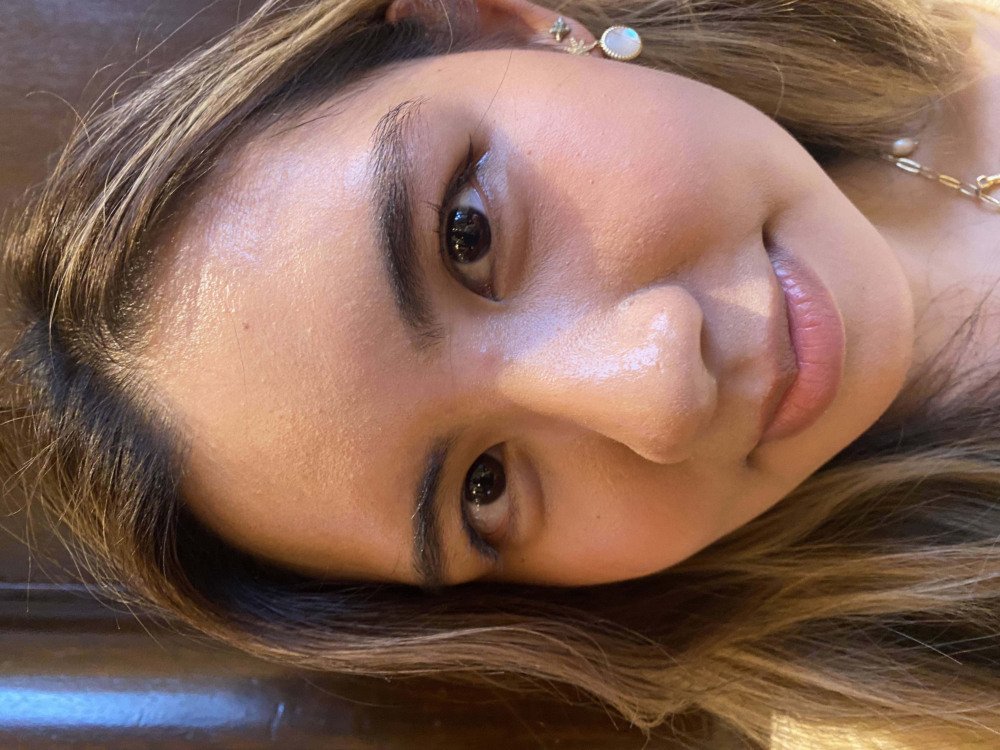
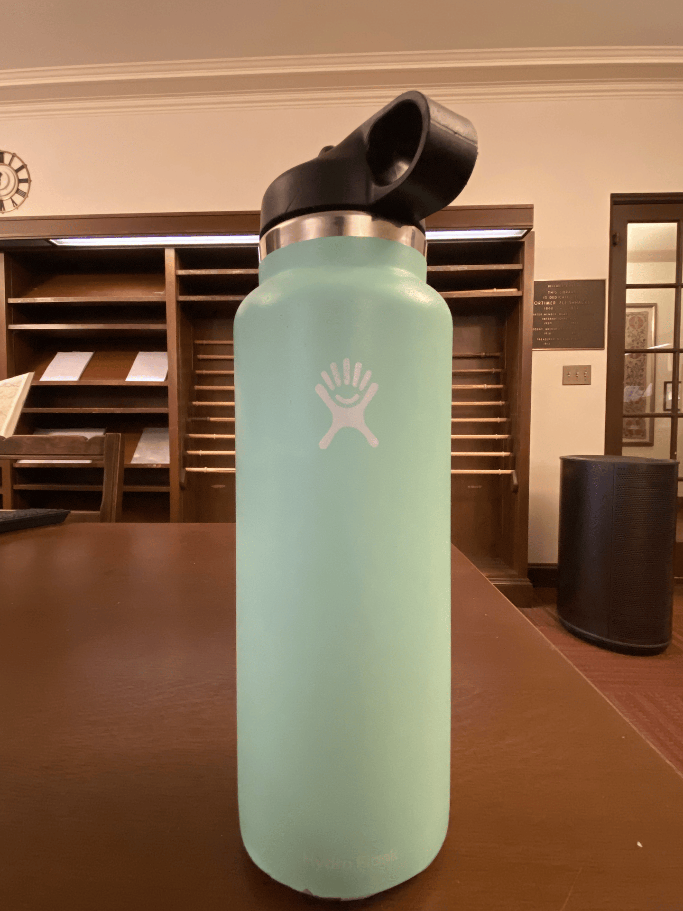

CS180 Project 0
Part 1: Selfie
Subject: My dear friend Phoebe

Why is the picture on the right better? My pre-educated guess: at closer distances, the relative proximity of the nose to the camera compared to other features like the cheeks is more significant than at farther distances, contributing to the "inflated" look.
Part 2: Architectural Perspective
Subject: UC Berkeley's Anthropology and Art Practice Building
Why is the picture on the left crisper? My pre-educated guess: the same phenomenon that worked against us in part one's portrait is beneficial to us here, because the depth of the building's features is more significant at closer distances. From far away, the image of the building is flat.
Part 3: The Dolly Zoom
Subject: My dear Hydroflask

Used 13 photos here!